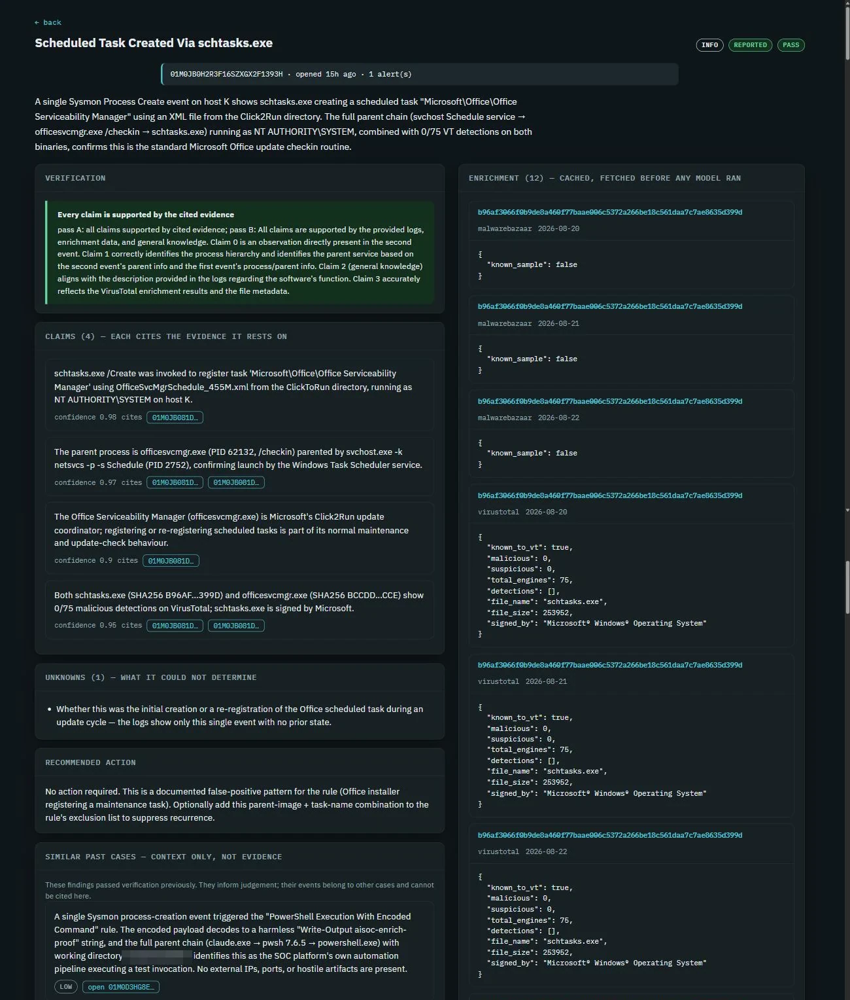

AI verification · Featured write-up
Probative: An LLM Triage Pipeline That Doesn't Trust Its Own Model
structuredfabricatedcaughtmeasured
A local research prototype, not a deployed tool, testing whether an AI's own security findings can be checked rather than trusted. Sigma rules, not a model, decide which alerts deserve attention and fix the severity before any model runs. One local model explains the evidence; a second, which never sees the first one's reasoning, judges whether that explanation holds. The check earned its place the day it broke: when constrained decoding stopped the investigator gathering evidence, the model invented whole incidents on hosts that don't exist, and the deterministic check caught every one.